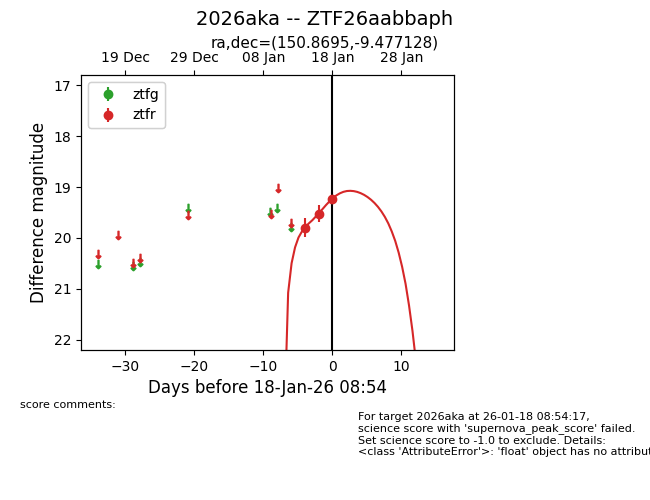
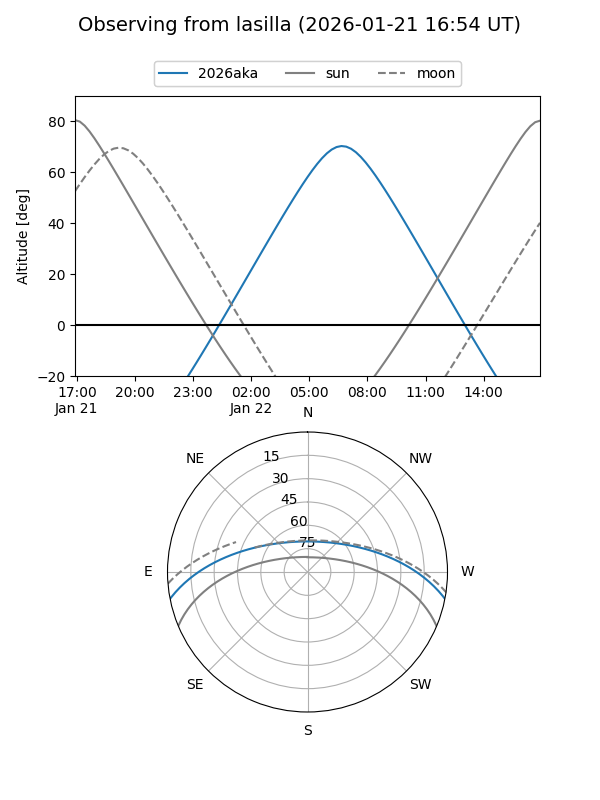
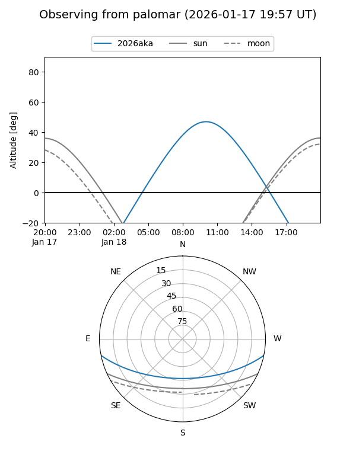
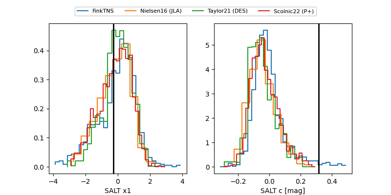

2026aka
Target 2026aka at 2026-01-18 08:55
Aliases and brokers:
FINK: link
Lasair: link
ALeRCE: link
TNS: link
YSE: link
alt names
ZTF26aabbaph (ztf,fink_ztf)
2026aka (tns,yse)
Coordinates:
equatorial (ra, dec) = 150.8695,-9.47713
equatorial (HMS+DMS) = 10:03:28.68,-09:28:37.66
galactic (l, b) = (249.0118,+35.26692)
Flags:
Photometry:
last ztfr=19.23
3 ztfr detections
Lightcurve

Visibility


Additional plots
